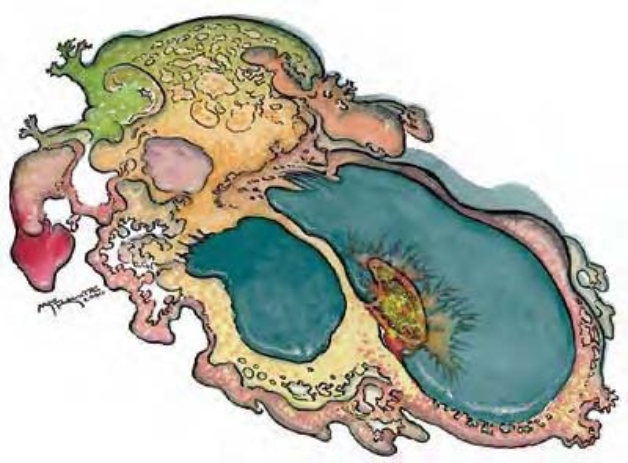

滑动的多色黏泡，宽5英尺，高度低于2.5英尺。
原变体是种不定形生物，外观可化为其他生物或物体。
原变体的变形能力可满足大部分生理需求，使他们得以探索生命、享乐及进行哲学思考。没人知道哪里可找到原变体或遇上原变体后会发生什么事。他们是天生的间谍，却出了名地不可信任，因为他们认为并没有必要回报所知道的事情。原变体与变形怪关系密切，有时会为了安全而结盟――但有时只是因为高兴。
原变体的天生形态约直径5英尺、中心高2英尺。彩色的涡状物即为其感觉器官。在这种形态下，原变体会像泥形怪一样滑动，并用伪足攻击。他重达400磅。
原变体通晓通用语，但偏好使用心灵感应进行沟通。
| 资料栏位 | 原变体 (Plasm) 中型异怪 (变形) |
| 生命骰 | 15d8+30 (97HP) |
| 先攻 | +6 |
| 速度 | 30英尺 (6格) |
| 防御等级 | 17 (+2敏捷、+5天生)、接触12、措手不及15 |
| 基本攻击/擒抱 | +11 / +12 |
| 攻击 | 挥击+12近战 (1d3+1) |
| 全力攻击 | 挥击+12近战 (1d3+1) |
| 占据/触及 | 5英尺 / 5英尺 |
| 特殊攻击 | ― |
| 特殊能力 | 化形、不定形、弹性、灵敏嗅觉、心灵感应100英尺、颤动感知60英尺 |
| 豁免 | 强韧+11、反射+11、意志+11 |
| 属性 | 力量12、敏捷15、体质15、智力16、感知15、魅力14 |
| 技能 | 唬骗+20、攀爬+7、手艺 (任一) +12、交涉+12、易容+12 (扮演+22)*、威吓+4、知识 (任一) +18、聆听+12、侦察+12、生存+8 |
| 专长 | 警觉、盲战、战斗反射、闪避、精通先攻、灵活移动 |
| 环境 | 地底 |
| 组织 | 单独 |
| 宝藏 | 标准 |
| 阵营 | 通常混乱中立 |
| 进化 | 15-21HD (超大型)；22-45HD (巨型) |
| 等级修正值 | ― |
遇上潜在危险时，原变体可能因心血来潮撤退、谈判或攻击。原变体很重视崭新经验：像是新的气味与味道、半真半假的故事、八卦、奇怪的小玩意儿等等。能够提供这些东西的话，很有可能就可以避免战斗。
如果被骚扰或追击，原变体会变形为他所知道最可怕的生物进行攻击，像是成年白龙或火巨人。若受重伤，则他会变成行动敏捷的生物试图逃脱。
不定形 (特异)：原变体的天生形态对强酸、“睡眠术”、麻痹、变形及震慑效果免疫。重击与夹击也无法对他产生影响，因为他没有明显的正面与背面。
弹性 (特异)：原变体的强韧与意志检定具有+4种族加值（已列于数据域位中）。
化形 (超自然)：原变体可以用标准动作任意化成任何大型以下的生物。原变体可持续保持变形形态，直到决定变回或更换形态为止。
颤动感知 (特异)：只有与地面有接触，原变体可以自动感知到60英尺内其他与地面有接触的事物位置。
技能：*变形时，原变体进行“易容”检定具有+10环境加值。